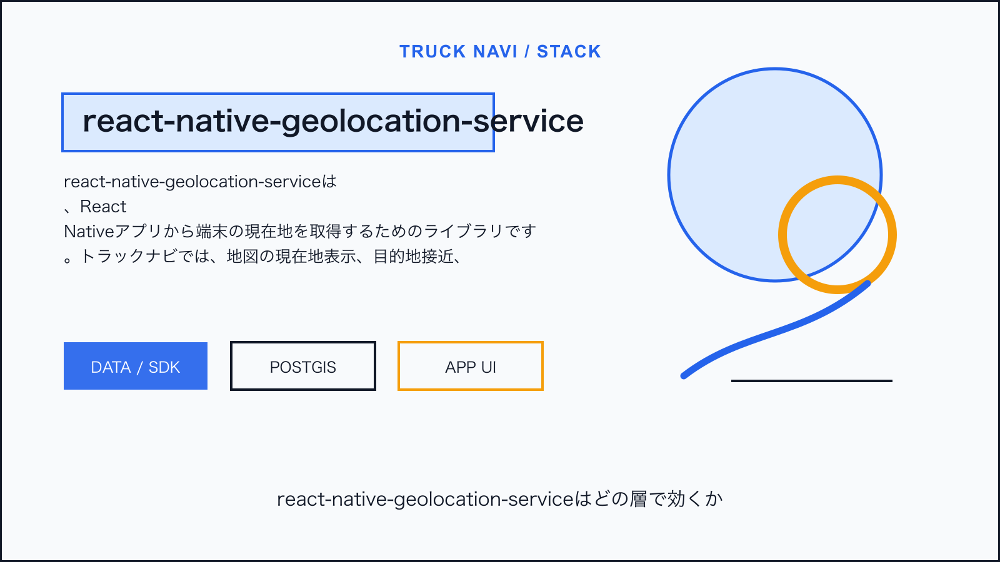
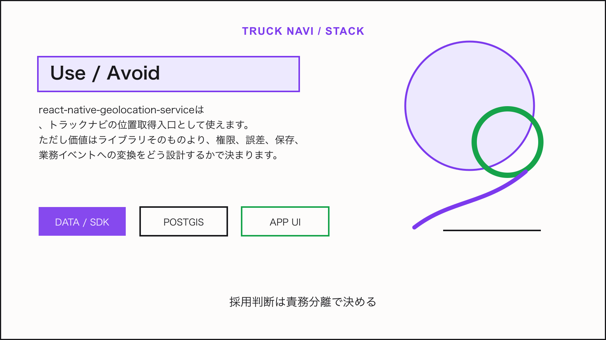

Tech Stack / Truck Navi
react-native-geolocation-serviceを走行位置取得の入口として見る

この技術は何か
react-native-geolocation-serviceは、React Nativeアプリから端末の現在地を取得するためのライブラリです。トラックナビでは、地図の現在地表示、目的地接近、停車検知、走行ログの入口になります。
NERV防災のライセンス情報から見える利用形態: react-native-geolocation-service license。
トラックナビで使えそうな理由
MVPでは、常時バックグラウンド追跡より、前景ナビ中の現在地取得と、到着前後の最低限のログから始めるのが現実的です。業務アプリでは権限説明、バッテリー、プライバシー、ログ保存期間を最初に設計します。
アーキテクチャ上の置き場所
端末位置はアプリ内でフィルタし、必要なイベントだけをAPIへ送ります。サーバー側では車両、案件、予定地点、到着判定、例外理由と紐付け、詳細な個人追跡にならない粒度で保存します。
Mobile App / Admin UI
↓
Truck Navi API
↓
PostGIS / business data
↓
Map, tile, weather, or device layer採用時の注意点
- 位置情報の取得目的、保存期間、利用者説明を明文化する
- OSごとのバックグラウンド権限制約をテストする
- GPS誤差を前提にジオフェンス半径と到着判定を設計する
結論
react-native-geolocation-serviceは、トラックナビの位置取得入口として使えます。ただし価値はライブラリそのものより、権限、誤差、保存、業務イベントへの変換をどう設計するかで決まります。

Sources
この技術を使っていると表明しているサービス
- NERV防災は、提示されたライセンス情報上でreact-native-geolocation-serviceを利用していると表明している。